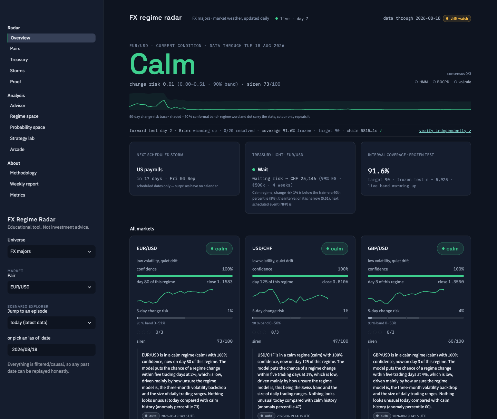
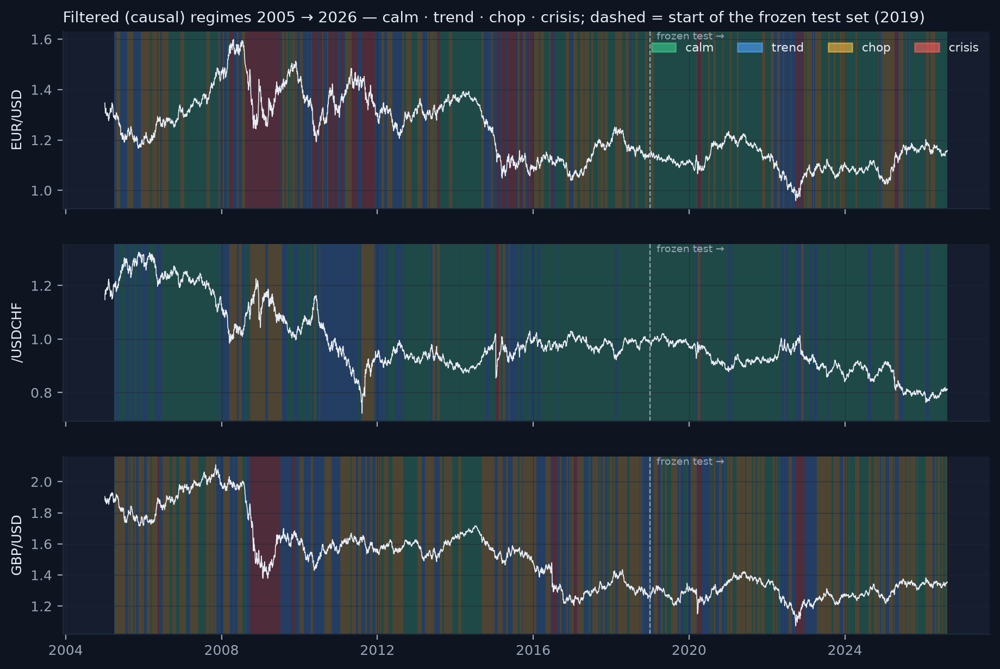

How a beginner built, from scratch and in the open, a production-style system that nowcasts the regime of EUR/USD, USD/CHF and GBP/USD, forecasts the risk that the regime changes, flags anomalous days, refuses to predict direction — and then proves itself in public, one sealed forecast a day.

Most retail "AI trading" projects promise to predict prices. This one refuses to. FX Regime Radar describes conditions — is the market calm, trending, choppy or in crisis; how likely is that to change within a week; does today look like anything the models have seen — and it keeps an un-fakeable public record of what it said before the outcomes existed. It was built by a motivated beginner as a hiring-grade portfolio project for quantitative finance and machine-learning roles, and it is written up here the way a research note and a product brief would be: methods with their mathematics, results with their failures, the engineering that makes the numbers reproducible, and the design that makes them legible.
Three audiences are addressed at once. Interviewers in quant research, risk, data science and software engineering will find every design decision defended, every number traced to a committed artifact, and the honest places where the system does not work. Practitioners — treasurers, fiduciaries, FX desks — will find a tool that answers one recurring question (how much adverse movement should I budget for this week, and is now a defensible moment to act?) without ever pretending to know which way a rate will go. Beginners who want to build something similar will find the principles that kept a first project from becoming a leaky backtest — causality, time-ordered splits, net-of-cost evaluation, calibrated probabilities, and a refusal to score the past with models that have read the future.
The models supply how much risk; they never supply which way. Everything else in this report — the filtered probabilities, the embargoed splits, the cost-aware backtests, the conformal bands, the hash-chained ledger — exists to make that one sentence checkable by a stranger.
A sailor does not ask the forecaster which way the next wave will break. She asks whether a storm is coming, how confident the station is, and whether the instruments have seen this sky before. That is the whole product.
Currency markets are the most liquid markets in the world and, at a daily horizon, among the least predictable in direction. What is predictable — or at least describable — is the texture of the market: whether volatility is low and drift quiet, whether a move is persisting, whether prices are flailing without direction, or whether the market is in outright crisis. Those textures cluster in time, they carry different risks for anyone holding foreign-currency exposure, and they can be estimated from data that was available yesterday.
FX Regime Radar runs every weekday at 06:00 UTC. It downloads daily prices for EUR/USD, USD/CHF and GBP/USD, builds nine causal features, asks a four-state hidden Markov model which regime each pair is in right now (using only the forward filter, so no future day leaks into today's label), asks a gradient-boosted classifier how likely the regime is to change within five trading days, asks an autoencoder how unlike a calm day today looks, gets a second opinion from a Bayesian online changepoint detector, wraps the change risk in a per-regime conformal band, writes a hash-chained ledger row before the outcome exists, narrates the numbers in three plain sentences, and publishes a dashboard that a treasurer can read in three seconds from two metres away. A Rust service replays the same mathematics from raw prices in 0.43 milliseconds and refuses to start unless it reproduces 302 golden vectors.
The first customer was imagined concretely: a Swiss SME treasurer with euro and dollar invoicing, a fiduciary firm advising such companies, or a treasury association. These people do not trade; they hedge, and the recurring decision is timing and sizing: lock a larger share of exposure now with a forward, wait and re-check, or ladder the hedge into tranches. A direction forecast is worse than useless to them — it is regulatory exposure. A regime-conditional estimate of how large the adverse weekly move could be, a traffic light that combines it with calendar and consensus, and a public record of how well those estimates have held up: that is a product. Chapter 14 builds it; chapter 18 prices it.
The author was a motivated beginner. The code base was built phase by phase — thirty-two phases, each with a verify block, a changelog entry, a commit and a version tag — using standard libraries (hmmlearn, xgboost, scikit-learn, shap, plotly, streamlit, axum, onnxruntime) but writing the parts that carry the intellectual weight by hand: the forward filter, the leakage tests, the cost-aware backtest engine with its lag law, the Adams–MacKay changepoint detector, the split-conformal calibration, the hash chain, the Rust feature engine that reproduces pandas bit-for-bit. The point of hand-writing them was not pride; it was that an interviewer can ask "show me the line" and there is a line to show.
If you are starting a similar project: the hardest part is not any single model. It is resisting the urge to peek. Every choice below that looks like pedantry — the five-day embargo, the filtered-not-smoothed probabilities, the test set scored once, the costs charged on turnover with a one-day lag — is a fence against your own future self, who will want to tune one more knob after seeing one more number.

The project has a constitution — a CLAUDE.md file of thirteen "golden rules" that override every other instruction. They were written on day one and never relaxed. They are reproduced here in plain language, because they are the answer to the interview question "how do you know your results are real?"
| # | Rule | Why it exists — and how it is enforced |
|---|---|---|
| 1 | No future data in features. Every feature at day t uses only data ≤ t. HMM outputs are filtered, never smoothed. | Smoothed posteriors use the whole sample; they look wonderful in backtests and cannot exist in production. Enforced by truncation-invariance tests in every feature module. |
| 2 | Time-ordered splits only. Train ≤ 2016, validation 2017–18, test 2019+, five-trading-day embargo at every boundary. The test set is scored once and frozen. | Labels look five days ahead, so a row just before a boundary would leak the first rows after it. The embargo removes them. Enforced by assign_splits and by reports that print "scored ONCE". |
| 3 | Never report accuracy for the forecaster. PR-AUC, precision/recall on transitions, Brier with a calibration plot, always beside base rate, logistic regression and a one-feature rule. | With a 16 % positive rate, "never changes" scores 84 % accuracy and means nothing. |
| 4 | The LLM narrates computed numbers only. JSON in, three sentences out, deterministic template if the API is unavailable. | A language model that analyses markets from its own memory is both unverifiable and a compliance hazard. Chapter 9. |
| 5 | No price-direction prediction anywhere. Regimes, change risk and anomalies — not returns. The strategy layer sizes a fixed mechanical stance; it never chooses the sign. | Enforced by a direction-word lint on every user-facing template (rise, fall, buy, sell, bullish … are banned words). |
| 6 | Every financial calculation has a test, including at least one truncation-invariance test per module. | 273 tests, ~70 s, no network, no API key. |
| 7 | Every surface says "Educational tool. Not investment advice." | Footer, sidebar, README, API JSON, e-mail report, widget. |
| 8 | Pipeline writes, app reads. Heavy compute lives in one daily script that writes small artifacts; the dashboard only reads them. | The app loads in about a second and can never train or download anything. |
| 9 | No secrets in code or git. | Everything runs without a key (template fallback); CI is key-free. |
| 10 | Finish every phase with the verify block, the changelog and a tagged commit. | 32 phases, tags v0.1.0 → v2.21.0. |
| 11 | The wall. Python is research only; the production path is Rust and imports nothing from Python at runtime. A versioned bundle (ONNX + JSON + feature spec + golden vectors + hashed manifest) is the only artifact that crosses. Pickle never crosses. | The Rust service replays all goldens at startup and refuses to serve on any mismatch (features 1e-8, model outputs 1e-6). Chapter 16. |
| 12 | The strategy layer obeys the lag law — a signal formed at close t earns returns from t+1 — and costs scale with volatility and are charged on turnover. Gross never appears without net. | Proven by the "foresight" test: a strategy given tomorrow's return must still earn nothing from it. Chapter 10. |
| 13 | Gamification ethics. Gamify learning and calibration only — never trading frequency, size or risk. The model's probability is revealed only after the user locks their own call. | The calibration arcade (an earlier phase) follows this; it is mentioned, not featured, here. |
Interviewers rarely ask "did you use XGBoost?". They ask "what did you do about leakage?", "how did you pick the threshold?", "what happens when the model drifts?", "what is the cost of being wrong?". Each rule above is a one-paragraph answer to one of those questions, and each is backed by a test you can run.
Daily OHLC bars from 2005 for three pairs; nine features that any desk would recognise; one cleaning rule that drops rather than fills; and a data contract whose column names are law.
Prices are downloaded from Yahoo Finance (the free source a beginner can reproduce) and cross-validated against the European Central Bank's reference rates through the Frankfurter API for the last three years; a mean absolute deviation above 0.5 % logs a warning, above 2 % aborts the run. Yahoo's daily FX "close" is in effect a start-of-day snapshot of the previous session, which has two consequences worth stating plainly: the overnight term of range-based volatility estimators is nearly zero on this feed (chapter 12), and shock days like 15 January 2015 show up in the range first and in the close-to-close return a day later (chapter 15). Nine corrupted prints — reverting jumps and absurd highs or lows — are dropped, never filled: a filled bar is an invented observation. The in-progress day is excluded so that two runs on the same day produce identical files.
As of this report the history spans 2005-03-28 to 2026-08-18: 16,843 price rows, 16,663 feature rows, 9,136 training rows, 1,527 validation rows, 5,925 test rows.
| feature | definition (annualised with √252 where relevant) | what it measures |
|---|---|---|
| ret_1d | log(closet/closet−1) | today's move |
| vol_20 | 20-day std of ret_1d | current weather — realised vol |
| vol_60 | 60-day std of ret_1d | the season — slower backdrop |
| vol_ratio | 5-day std / vol_60 | a storm front — very recent vol vs the season |
| mom_20 | 20-day log return | persistence of the move (magnitude only is used downstream) |
| rng_hl | 10-day mean of (high − low)/close | intraday range — the feature that screamed on 15 Jan 2015 |
| corr_20 | mean 20-day correlation of this pair's returns with the other two (USD/CHF sign-flipped so all three are "USD-quoted" consistently) | is the dollar moving everything? |
| ret_5d_abs | |5-day log return| | size of the recent move |
| hmm_entropy · days_in_regime · vol_trend | post-HMM: entropy of the filtered state distribution; run length of the current label; sign of vol_20 − vol_20 ten days ago | how unsure the regime model is; how old the regime is |
The single most important test in the repository is also the simplest. Compute the features on the full history; compute them again on the history truncated at some date T; the rows up to T must be bit-for-bit identical. Not "close" — identical. Any rolling window that is centred instead of trailing, any scaler fitted on the full sample, any smoother, any forward fill from the future fails this test immediately. It is applied to the base features, to the HMM outputs, to the BOCPD run lengths, to every one of the 49 extended features, to the central-bank tone features, to the backtest engine and to the replay engine.
A scaler fitted on the whole history knows the future's mean and variance. Every StandardScaler in the project — the HMM's, the logistic baseline's, the extended features' — is fitted on training rows (≤ 2016-12-31) only and frozen with the model. The same discipline applies to the train-only PCA behind the 3-D "landscape" view, to the conformal quantiles (validation only) and to the treasury thresholds (training era only). A reviewer can check this in thirty seconds: every fitted object stores its train_end and the number of rows it was fitted on.
The free data source is the weakest link. Yahoo's daily FX bars are not exchange prints; they have occasional bad ticks (dropped, never filled) and a start-of-day close convention. For a thesis-grade study one would buy a clean tick-aggregated feed. The methodology does not depend on the source; the numbers do, a little — which is one reason the live ledger, not the backtest, is the headline.